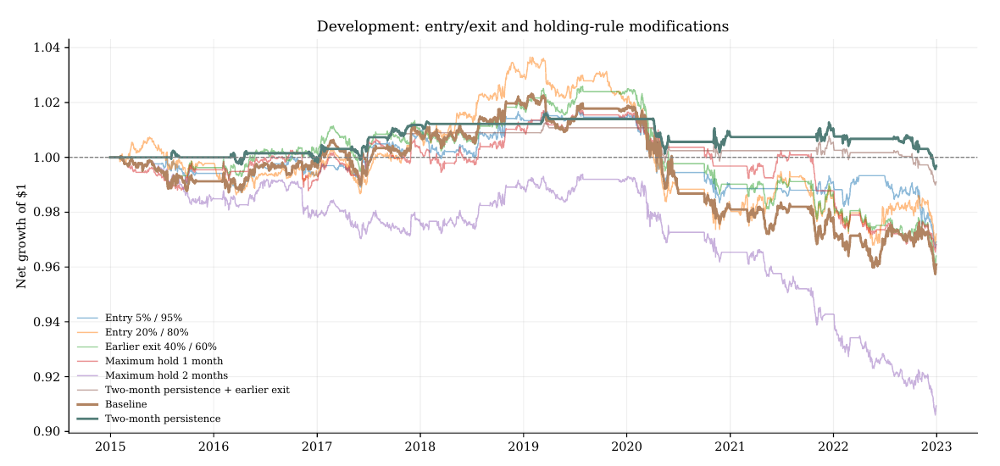

The central finding
Conditional-probability signals were more useful for adjusting portfolio allocations than for implementing discrete reversal trades.
Traditional pair trading assumes that unusually large relative moves will reverse. A vine copula relaxes the dependence assumptions by modeling a network of pairwise and conditional relationships. I tested whether those richer relationships translated into economically meaningful results after trading costs.
All performance is historical backtest evidence, not investment advice or a claim of future performance.
Choosing the universe
I used historical daily sector ETF log returns from 2010–2014 to measure rank dependence with Kendall’s τ. Average-linkage clustering on the distance √((1−τ)/2) identified five strongly connected sectors.
Instead of relying on daily signals, the final model uses overlapping 21-session log returns to reduce noise. Returns are scaled by volatility estimated before each return window, using an EWMA with a 63-session half-life.
Initial marginal fits were tested against a held-out validation year. Normal and Student-t marginal families remained practical choices after adjustment, although residual lower-tail discrepancies persisted for XLB and XLY.
Modeling conditional dependence
A copula separates each ETF’s individual return behavior from the dependence between ETFs. Transforming volatility-adjusted returns through their fitted marginal CDFs generates approximately uniform observations. A C-vine then connects those observations through ten pair copulas across four trees.
For each target ETF, the other four sectors are ordered using Kendall’s τ-based root selection. Pair-copula h-functions propagate conditional probabilities between trees; Student-t copulas were frequently preferred. Five-year rolling models are refitted annually.
The target's conditional probability, q, estimates where its return sits in the distribution implied by the other sectors. Very low probabilities signal relative weakness; very high probabilities signal relative strength. These are indicators of unusual returns, not guarantees of a reversal.
Three ways to use the signal
1. Discrete reversal trading
At month-end, go long a target ETF and short its peers when q < 10%; reverse the trade when q > 90%. Exit at a crossing of 50% or after three monthly decision intervals. Execute at the next trading close, with 5 bps transaction costs and a 1% annualized short borrowing cost.
2. Persistence and passive overlays
Require two consecutive extreme month-end probabilities before opening a position. Apply the resulting long-short exposure to an equal-weight passive basket, netting short positions against existing holdings.
3. Continuous portfolio tilting
Convert the probability into a continuous reversal score:
Center scores across the universe and translate them into weight adjustments capped at 10 percentage points. The portfolio remains fully invested and long-only. Compare monthly, quarterly and staggered quarterly rebalancing.
What the backtests revealed
Reversal trades did not generate reliable net returns.
The baseline delivered 126 completed trades and a 53.97% hit rate across its combined evaluation, but average losses exceeded average gains. Its out-of-sample annualized net return in 2024–2025 was −0.633%. All tested development variants had negative net returns.
| Development (2015–22) | Net total | Max drawdown | Trades |
|---|---|---|---|
| Baseline | −3.909% | −6.444% | 86 |
| Two-month persistence | −0.316% | −2.011% | 17 |

Persistence reduced trading and average gross exposure substantially. When used as an overlay, it approximately matched passive investing, rather than adding material value.
Portfolio tilting was more promising.
Quarterly tilting increased relative terminal wealth by 1.364% during development and 2.955% out of sample, with lower turnover than monthly tilting. Monthly tilting had stronger out-of-sample performance (information ratio 0.757), but weaker development results.

Does the signal work in stressed markets?
Market regimes combine 63-session realized basket volatility and the sign of the preceding 63-session compounded return. The stress threshold is the 75th percentile of month-start volatility in 2010–2014. Both features are lagged and fixed at month start.
| Regime (OOS) | Months | Quarterly mean active return (bps/month) |
|---|---|---|
| Calm / Up | 23 | 8.806 |
| Calm / Down | 6 | 1.042 |
| Stressed / Up | 6 | 14.329 |
| Stressed / Down | 1 | −8.887 |
The evidence does not establish a systematic advantage during stress. With just one stressed/down month out of sample, the study cannot draw reliable conclusions about downside protection.
From prediction to allocation
The most useful signal may not be a binary trade. It may be a measured adjustment to an existing investment portfolio.
Quarterly tilting demonstrated the most consistent return–turnover balance across the tested periods. Nevertheless, overlapping observations, imperfect marginal calibration, multiple specification searches and uneven regime samples limit the strength of the evidence.
Further testing on untouched data, with transaction-cost sensitivity and model-stability checks, is required before interpreting the results as a durable investment advantage.
References & report
Full final project report (PDF)
- Sahamkhadam, M. (2021). Dynamic copula-based expectile portfolios. Journal of Asset Management, 22, 209–223.
- Sahamkhadam, M., & Stephan, A. (2023). Portfolio optimization based on forecasting models using vine copulas. Journal of Forecasting, 42(8), 2139–2166.